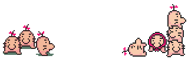

The Mr. Saturn are a peculiar species of beings that reside in Saturn Valley. They are harmless, peaceful characters who help players in need. The main diet of a Mr. Saturn includes peanut cheese bars and piggy jelly. Boing.
Mr. Saturn appears in the video game series EarthBound.

© 2013 Midori Mori